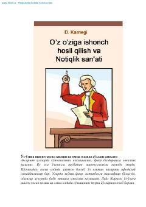

OIOmmaviy chiqishlardan qo'rquvni yengish va notiqlik san'atini egallash sirlari.
Ushbu kitob insonning o'ziga bo'lgan ishonsizlikni yengishi, qo'rquvni yo'q qilishi va ommaviy axborot oldida erkin so'zlash, notiqlik san'atini egallash yo'llarini o'rgatadi. Muallif hayotiy misollar va amaliy tavsiyalar orqali har qanday inson o'zida dadillikni shakllantirishi mumkinligini isbotlaydi. Asar jamoatchilik oldida chiqish qilishdan qo'rqadigan va o'z fikrini erkin bayon etishni istaganlar uchun qo'llanmadir.